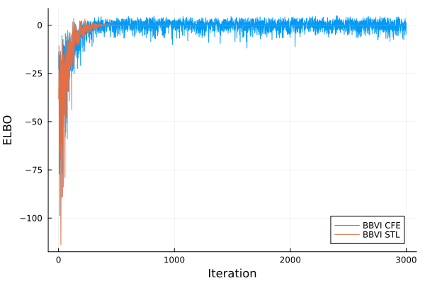
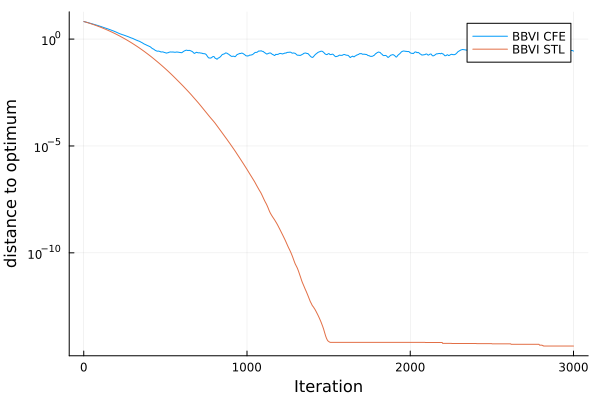
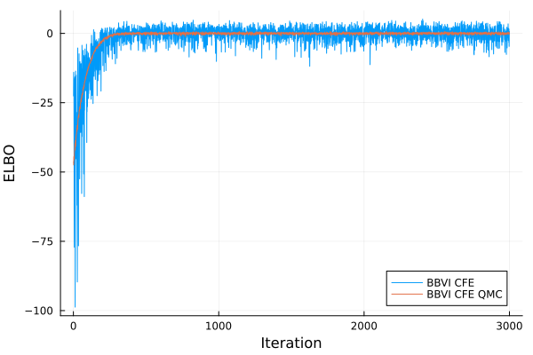
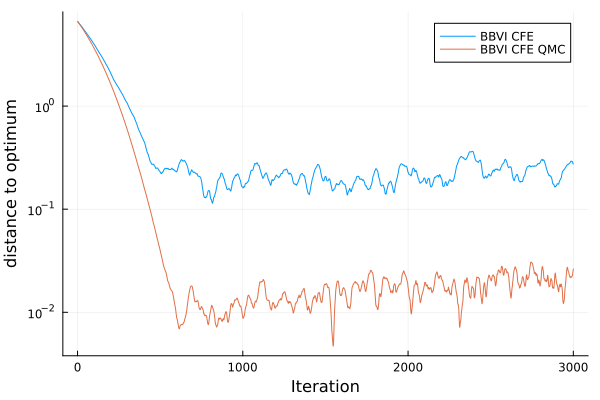

Reparameterization Gradient Estimator
Overview
The RepGradELBO objective implements the reparameterization gradient estimator[HC1983][G1991][R1992][P1996] of the ELBO gradient. The reparameterization gradient, also known as the push-in gradient or the pathwise gradient, was introduced to VI in [TL2014][RMW2014][KW2014]. For the variational family $\mathcal{Q} = \{q_{\lambda} \mid \lambda \in \Lambda\}$, suppose the process of sampling from $q_{\lambda}$ can be described by some differentiable reparameterization function $T_{\lambda}$ and a base distribution $\varphi$ independent of $\lambda$ such that
\[z \sim q_{\lambda} \qquad\Leftrightarrow\qquad z \stackrel{d}{=} T_{\lambda}\left(\epsilon\right);\quad \epsilon \sim \varphi \; .\]
In these cases, denoting the target log denstiy as $\log \pi$, we can effectively estimate the gradient of the ELBO by directly differentiating the stochastic estimate of the ELBO objective
\[ \widehat{\mathrm{ELBO}}\left(\lambda\right) = \frac{1}{M}\sum^M_{m=1} \log \pi\left(T_{\lambda}\left(\epsilon_m\right)\right) + \mathbb{H}\left(q_{\lambda}\right),\]
where $\epsilon_m \sim \varphi$ are Monte Carlo samples. The resulting gradient estimate is called the reparameterization gradient estimator.
In addition to the reparameterization gradient, AdvancedVI provides the following features:
- Posteriors with constrained supports are handled through
Bijectors, which is known as the automatic differentiation VI (ADVI; [KTRGB2017]) formulation. (See this section.) - The gradient of the entropy can be estimated through various strategies depending on the capabilities of the variational family. (See this section.)
RepGradELBO
To use the reparameterization gradient, AdvancedVI provides the following variational objective:
AdvancedVI.RepGradELBO — TypeRepGradELBO(n_samples; kwargs...)Evidence lower-bound objective with the reparameterization gradient formulation[TL2014][RMW2014][KW2014].
Arguments
n_samples::Int: Number of Monte Carlo samples used to estimate the ELBO.
Keyword Arguments
entropy: The estimator for the entropy term. (Type<: AbstractEntropyEstimator; Default:ClosedFormEntropy())
Requirements
- The variational approximation $q_{\lambda}$ implements
rand. - The target distribution and the variational approximation have the same support.
- The target
LogDensityProblems.logdensity(prob, x)must be differentiable with respect toxby the selected AD backend.
Depending on the options, additional requirements on $q_{\lambda}$ may apply.
Handling Constraints with Bijectors
As mentioned in the docstring, the RepGradELBO objective assumes that the variational approximation $q_{\lambda}$ and the target distribution $\pi$ have the same support for all $\lambda \in \Lambda$.
However, in general, it is most convenient to use variational families that have the whole Euclidean space $\mathbb{R}^d$ as their support. This is the case for the location-scale distributions provided by AdvancedVI. For target distributions which the support is not the full $\mathbb{R}^d$, we can apply some transformation $b$ to $q_{\lambda}$ to match its support such that
\[z \sim q_{b,\lambda} \qquad\Leftrightarrow\qquad z \stackrel{d}{=} b^{-1}\left(\eta\right);\quad \eta \sim q_{\lambda},\]
where $b$ is often called a bijector, since it is often chosen among bijective transformations. This idea is known as automatic differentiation VI[KTRGB2017] and has subsequently been improved by Tensorflow Probability[DLTBV2017]. In Julia, Bijectors.jl[FXTYG2020] provides a comprehensive collection of bijections.
One caveat of ADVI is that, after applying the bijection, a Jacobian adjustment needs to be applied. That is, the objective is now
\[\mathrm{ADVI}\left(\lambda\right) \triangleq \mathbb{E}_{\eta \sim q_{\lambda}}\left[ \log \pi\left( b^{-1}\left( \eta \right) \right) + \log \lvert J_{b^{-1}}\left(\eta\right) \rvert \right] + \mathbb{H}\left(q_{\lambda}\right)\]
This is automatically handled by AdvancedVI through TransformedDistribution provided by Bijectors.jl. See the following example:
using Bijectors
q = MeanFieldGaussian(μ, L)
b = Bijectors.bijector(dist)
binv = inverse(b)
q_transformed = Bijectors.TransformedDistribution(q, binv)By passing q_transformed to optimize, the Jacobian adjustment for the bijector b is automatically applied. (See Examples for a fully working example.)
Entropy Estimators
For the gradient of the entropy term, we provide three choices with varying requirements. The user can select the entropy estimator by passing it as a keyword argument when constructing the RepGradELBO objective.
| Estimator | entropy(q) | logpdf(q) | Type |
|---|---|---|---|
ClosedFormEntropy | required | Deterministic | |
MonteCarloEntropy | required | Monte Carlo | |
StickingTheLandingEntropy | required | Monte Carlo with control variate |
The requirements mean that either Distributions.entropy or Distributions.logpdf need to be implemented for the choice of variational family. In general, the use of ClosedFormEntropy is recommended whenever possible. If entropy is not available, then StickingTheLandingEntropy is recommended. See the following section for more details.
The StickingTheLandingEntropy Estimator
The StickingTheLandingEntropy, or STL estimator, is a control variate approach [RWD2017].
AdvancedVI.StickingTheLandingEntropy — TypeStickingTheLandingEntropy()The "sticking the landing" entropy estimator[RWD2017].
Requirements
- The variational approximation
qimplementslogpdf. logpdf(q, η)must be differentiable by the selected AD framework.
It occasionally results in lower variance when $\pi \approx q_{\lambda}$, and higher variance when $\pi \not\approx q_{\lambda}$. The conditions for which the STL estimator results in lower variance is still an active subject for research.
The main downside of the STL estimator is that it needs to evaluate and differentiate the log density of $q_{\lambda}$, logpdf(q), in every iteration. Depending on the variational family, this might be computationally inefficient or even numerically unstable. For example, if $q_{\lambda}$ is a Gaussian with a full-rank covariance, a back-substitution must be performed at every step, making the per-iteration complexity $\mathcal{O}(d^3)$ and reducing numerical stability.
Let us come back to the example in Examples, where a LogDensityProblem is given as model. In this example, the true posterior is contained within the variational family. This setting is known as "perfect variational family specification." In this case, the RepGradELBO estimator with StickingTheLandingEntropy is the only estimator known to converge exponentially fast ("linear convergence") to the true solution.
Recall that the original ADVI objective with a closed-form entropy (CFE) is given as follows:
n_montecarlo = 16;
b = Bijectors.bijector(model);
binv = inverse(b)
q0_trans = Bijectors.TransformedDistribution(q0, binv)
cfe = KLMinRepGradDescent(
AutoForwardDiff(); entropy=ClosedFormEntropy(), optimizer=Adam(1e-2)
)
nothingThe repgradelbo estimator can instead be created as follows:
stl = KLMinRepGradDescent(
AutoForwardDiff(); entropy=StickingTheLandingEntropy(), optimizer=Adam(1e-2)
)
nothing
We can see that the noise of the repgradelbo estimator becomes smaller as VI converges. However, the speed of convergence may not always be significantly different. Also, due to noise, just looking at the ELBO may not be sufficient to judge which algorithm is better. This can be made apparent if we measure convergence through the distance to the optimum:

We can see that STL kicks-in at later stages of optimization. Therefore, when STL "works", it yields a higher accuracy solution even on large stepsizes. However, whether STL works or not highly depends on the problem[KMG2024]. Furthermore, in a lot of cases, a low-accuracy solution may be sufficient.
Advanced Usage
There are two major ways to customize the behavior of RepGradELBO
- Customize the
Distributionsfunctions:rand(q),entropy(q),logpdf(q). - Customize
AdvancedVI.reparam_with_entropy.
It is generally recommended to customize rand(q), entropy(q), logpdf(q), since it will easily compose with other functionalities provided by AdvancedVI.
The most advanced way is to customize AdvancedVI.reparam_with_entropy. In particular, reparam_with_entropy is the function that invokes rand(q), entropy(q), logpdf(q). Thus, it is the most general way to override the behavior of RepGradELBO.
AdvancedVI.reparam_with_entropy — Functionreparam_with_entropy(rng, q, q_stop, n_samples, ent_est)Draw n_samples from q and compute its entropy.
Arguments
rng::Random.AbstractRNG: Random number generator.q: Variational approximation.q_stop: Same asq, but held constant during differentiation. Should only be used for computing the entropy.n_samples::Int: Number of Monte Carlo samplesent_est: The entropy estimation strategy. (Seeestimate_entropy.)
Returns
samples: Monte Carlo samples generated through reparameterization. Their support matches that of the target distribution.entropy: An estimate (or exact value) of the differential entropy ofq.
To illustrate how we can customize the rand(q) function, we will implement quasi-Monte-Carlo variational inference[BWM2018]. Consider the case where we use the MeanFieldGaussian variational family. In this case, it suffices to override its rand specialization as follows:
using QuasiMonteCarlo
using StatsFuns
qmcrng = SobolSample(; R=OwenScramble(; base=2, pad=32))
function Distributions.rand(
rng::AbstractRNG, q::MvLocationScale{<:Diagonal,D,L}, num_samples::Int
) where {L,D}
(; location, scale, dist) = q
n_dims = length(location)
scale_diag = diag(scale)
unif_samples = QuasiMonteCarlo.sample(num_samples, length(q), qmcrng)
std_samples = norminvcdf.(unif_samples)
return scale_diag .* std_samples .+ location
end
nothing(Note that this is a quick-and-dirty example, and there are more sophisticated ways to implement this.)
By plotting the ELBO, we can see the effect of quasi-Monte Carlo.  We can see that quasi-Monte Carlo results in much lower variance than naive Monte Carlo. However, similarly to the STL example, just looking at the ELBO is often insufficient to really judge performance. Instead, let's look at the distance to the global optimum:

QMC yields an additional order of magnitude in accuracy. Also, unlike STL, it ever-so slightly accelerates convergence. This is because quasi-Monte Carlo uniformly reduces variance, unlike STL, which reduces variance only near the optimum.
- HC1983Ho, Y. C., & Cao, X. (1983). Perturbation analysis and optimization of queueing networks. Journal of optimization theory and Applications, 40(4), 559-582.
- G1991Glasserman, P. (1991). Gradient estimation via perturbation analysis (Vol. 116). Springer Science & Business Media.
- R1992Rubinstein, R. Y. (1992). Sensitivity analysis of discrete event systems by the “push out” method. Annals of Operations Research, 39(1), 229-250.
- P1996Pflug, G. C. (1996). Optimization of stochastic models: the interface between simulation and optimization (Vol. 373). Springer Science & Business Media.
- TL2014Titsias, M., & Lázaro-Gredilla, M. (2014). Doubly stochastic variational Bayes for non-conjugate inference. In International Conference on Machine Learning.
- RMW2014Rezende, D. J., Mohamed, S., & Wierstra, D. (2014). Stochastic backpropagation and approximate inference in deep generative models. In International Conference on Machine Learning.
- KW2014Kingma, D. P., & Welling, M. (2014). Auto-encoding variational bayes. In International Conference on Learning Representations.
- KTRGB2017Kucukelbir, A., Tran, D., Ranganath, R., Gelman, A., & Blei, D. M. (2017). Automatic differentiation variational inference. Journal of Machine Learning Research.
- DLTBV2017Dillon, J. V., Langmore, I., Tran, D., Brevdo, E., Vasudevan, S., Moore, D., ... & Saurous, R. A. (2017). Tensorflow distributions. arXiv.
- FXTYG2020Fjelde, T. E., Xu, K., Tarek, M., Yalburgi, S., & Ge, H. (2020,. Bijectors. jl: Flexible transformations for probability distributions. In Symposium on Advances in Approximate Bayesian Inference.
- RWD2017Roeder, G., Wu, Y., & Duvenaud, D. K. (2017). Sticking the landing: Simple, lower-variance gradient estimators for variational inference. Advances in Neural Information Processing Systems, 30.
- KMG2024Kim, K., Ma, Y., & Gardner, J. (2024). Linear Convergence of Black-Box Variational Inference: Should We Stick the Landing?. In International Conference on Artificial Intelligence and Statistics (pp. 235-243). PMLR.
- BWM2018Buchholz, A., Wenzel, F., & Mandt, S. (2018). Quasi-monte carlo variational inference. In International Conference on Machine Learning.